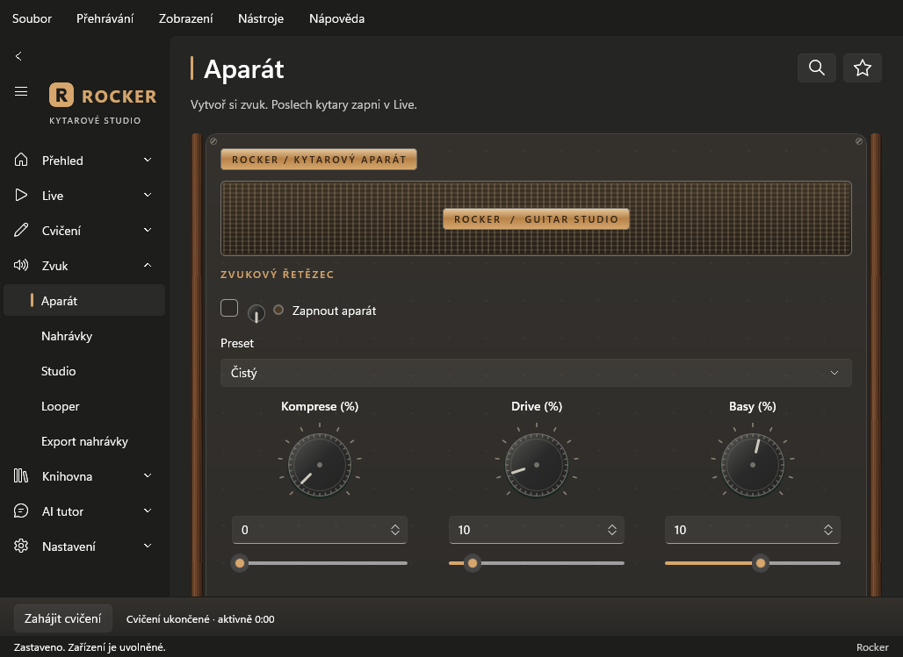
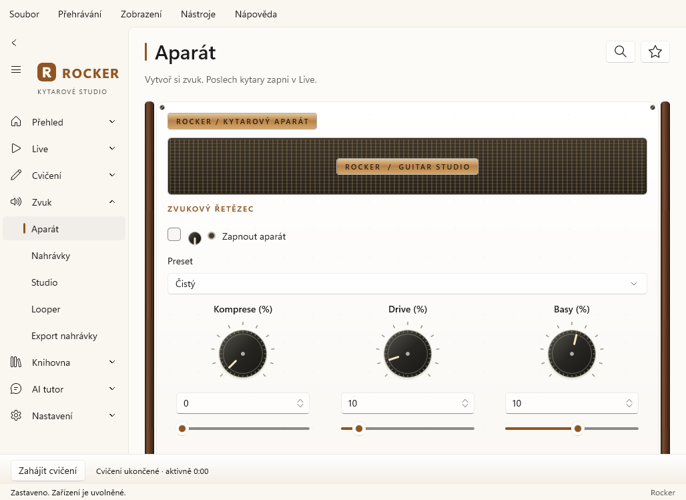
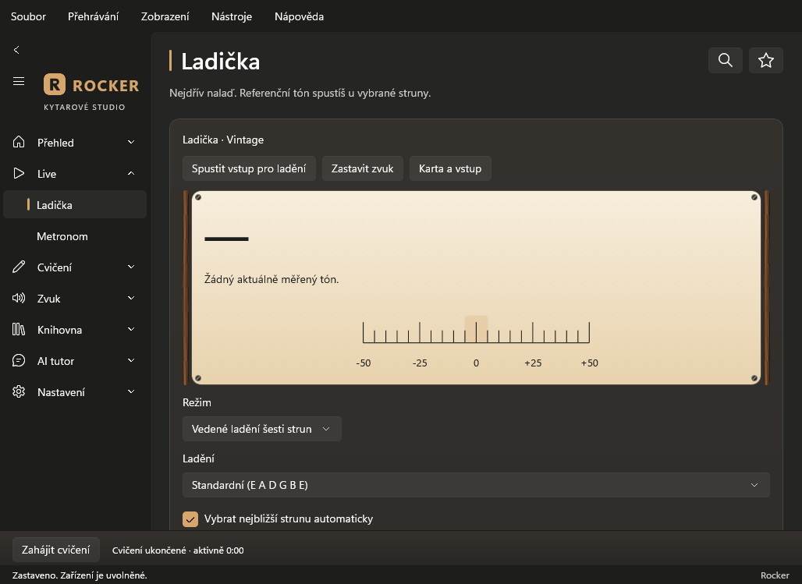
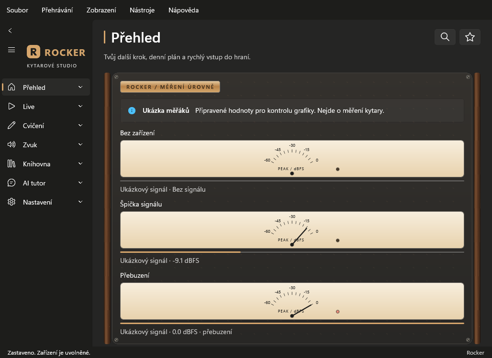

Aparát jako malé komboOřechové bočnice, tkaná mřížka, měděné štítky a vroubkované knoflíky.
Aparát ve světlém prostředíStejný přístrojový vzhled a tmavý bakelit; přesné číselné ovládání zůstává nativní.
LadičkaKrémová stupnice, dřevěný rám a měřák skutečné špičky vstupu. Bez vstupu není vymyšlená ručička ani nota.
Podsvícené měřákyOznačená ukázka připravených hodnot: bez zařízení, signál a přebuzení. Nejde o reálné měření kytary.